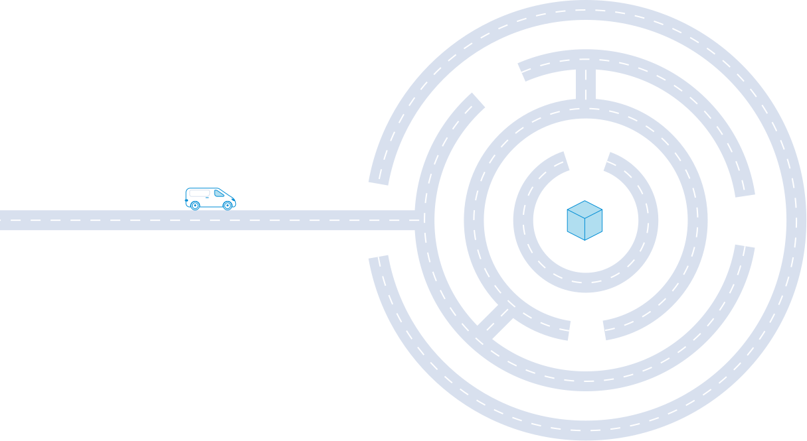

<template>

    <require from="./page-not-found.scss"></require>

    <page name="page-not-found">

        <div>

            

            <div>

                <div class="margin-bottom opacity-faded" translate>
                    404 - page not found
                </div>

                <h1 translate>
                    Oops, you're probably driving the wrong way!
                </h1>
            </div>

            <div>

                <div class="font-large margin-double-bottom" translate>
                    Suggestions for ways out of the roundabout:
                </div>

                <a class="margin-bottom" href="/" translate>
                    Go to the home page
                </a>

            </div>

        </div>

    </page>

</template>
